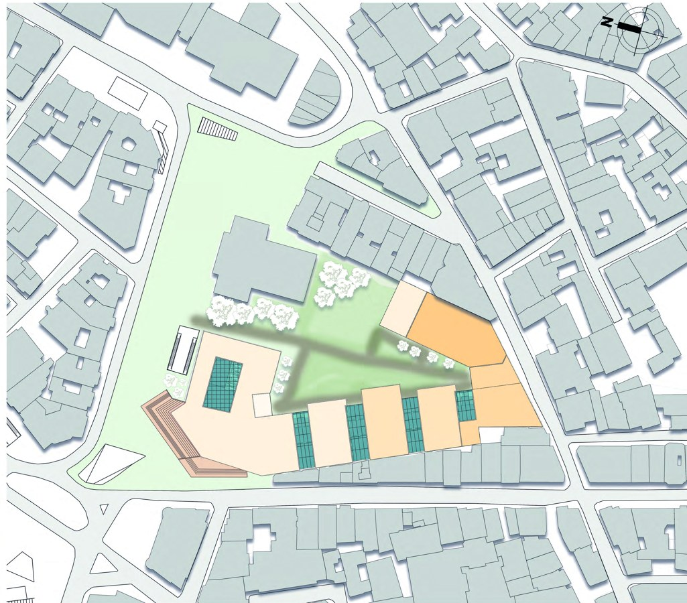
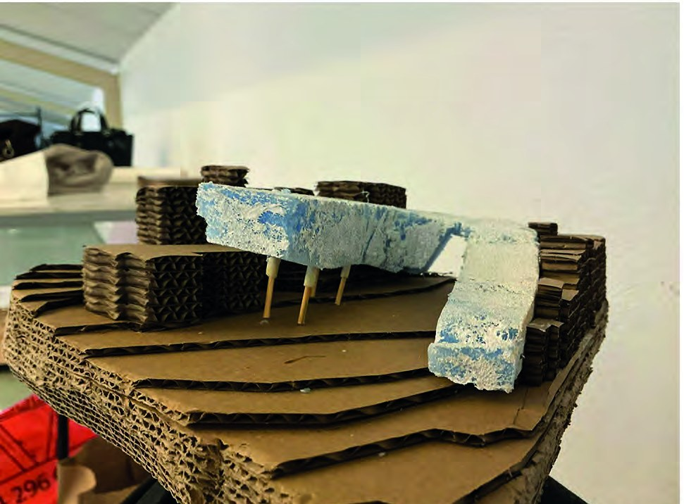
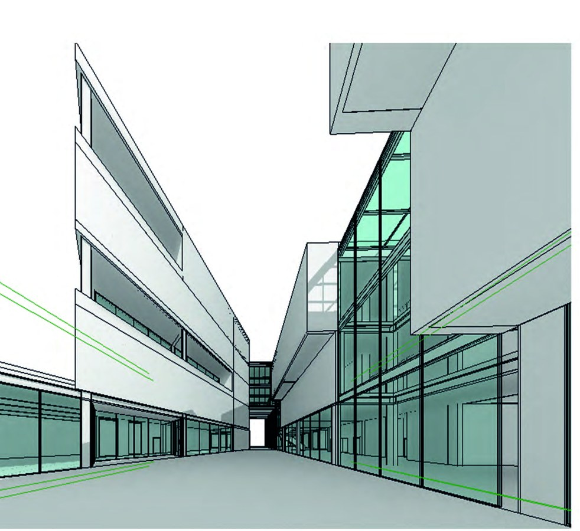
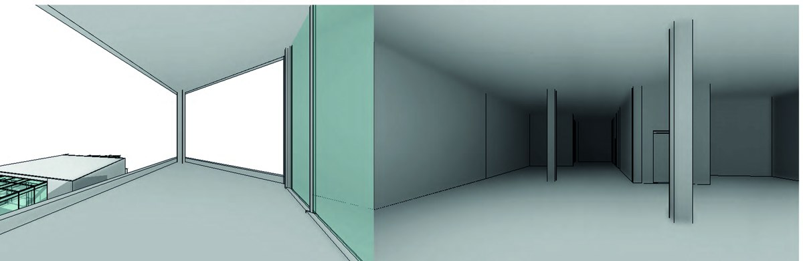

Beyoğlu, İstanbul | Mimari Proje 2
Şişhane Mimarlık Müzesi, Kuledibi Katlı Otoparkı'nın yerine önerilmiştir. Proje, Galata'nın tarihî dokusunu ve kent belleğini yeni bir müze yapısıyla buluşturur.
Yapı, arazideki yaklaşık 7 metrelik kot farkını takip eden basamaklı kütlelerden oluşur. Geçiş ve yarı açık alanlar ziyaretçiyi farklı sergi mekânlarına taşır. Cephede cam ve taş birlikte kullanılır.

Galata çevresi ve vaziyet planı

Fiziksel maket çalışması

Dış mekân perspektifi

Sergi mekânı perspektifi
Projede sabit ve geçici sergi alanları, açık sergi alanları, köprü sergi alanı, teras, müze kafesi, restoranı ve mağazası yer alır.
Hazırlayan: Mehmet Toprak
20231301031
20.10.2026 / MIM 2061 Mimarlar İçin Kodlamaya Giriş / Ecem Ergin